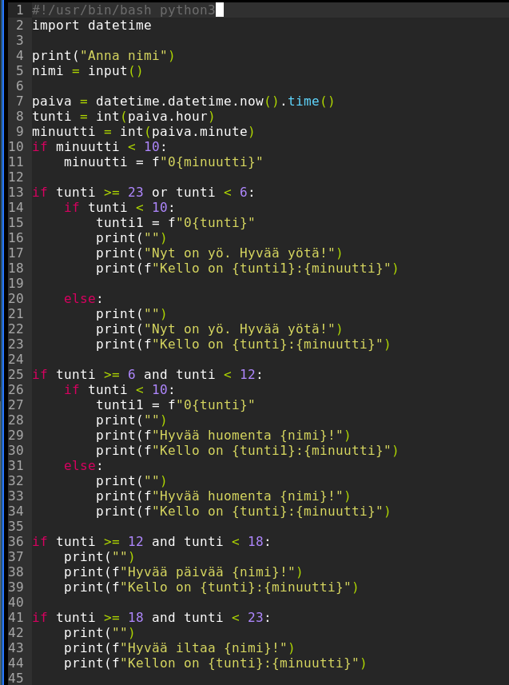

Skripti
Kirjotin skriptin, joka kysyy käyttäjän nimeä ja tulostaa tervehdyksen kellonajan mukaan.
06-12 Hyvää huomenta, 12-18 Hyvää päivää, 18-23 Hyvää iltaa ja 23-06 Hyvää yötä.
Rivillä 1 kerron tietokoneelle että käytän python3
Rivillä 2 importtaan datetime kirjaston, josta saan päivämäärät ja kellonajat
Rivillä 4 kysyn nimeä ja rivillä 5 annan käyttäjälle vuoron vastata siihen
Rivillä 7 määritelen variablen paiva, joka saa arvokseen datetime kirjastosta haetun ajan
Tämän jälkeen määrittelen tunti sekä minuutti variablet ja kerron ohjelmalle, että haluan ne numero muodossa. Esimerkiksi pelkkä paiva.hour antaisi datetime objektin, jota ei voi verrata muihin arvoihin (esim. tunti <>= 4)
Rivillä 10 ja 11 sanon että jos minuutin arvo on alle 10 niin minuutin eteen lisätään 0 (4 --> 04). Näin kellon ajasta tulee kivemman näköinen
Koska käytin tunti variablea arvojen vertailuun (tekstiä ei voi verrata numeroihin), joten lisäsin if lauseen riveille 14 ja 26
Tulostus näytti tältä aamusta tältä:
Ja yöllä tältä:

Yhteenveto
Käytin datetime kirjastoa päivämäärän ja kellon ajan hakemiseen. Erotin tunnit ja minuutit ja muutin ne objekstista numero muotoon. Tämän jälkeen if lauseilla kerroin että jos kello on yli tai alle XX niin tulosta YY.